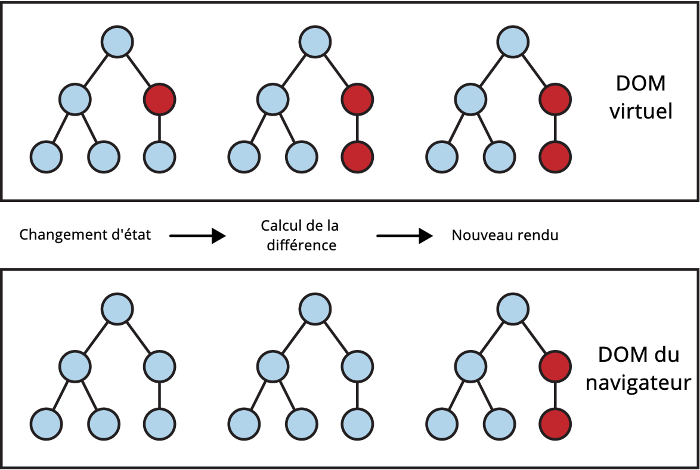
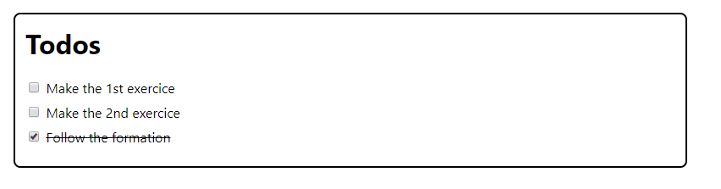
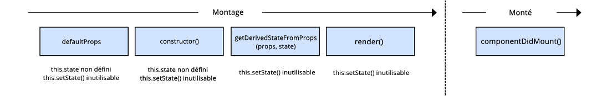
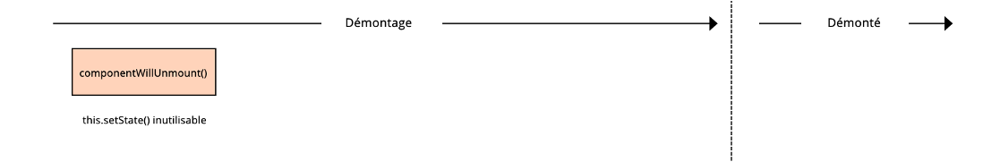
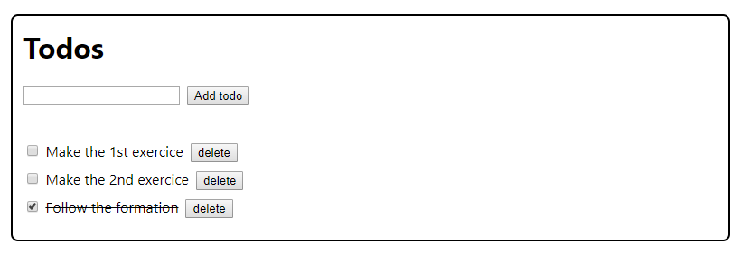
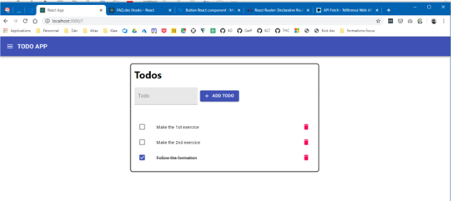

Formation React
- Généralités -
> Présentation
React
React est un framework JS, souvent mise en compétition avec d'autres frameworks (tels Angular, Vue.js, et toute une flopée qui naissent et meurent aussi vite qu'ils sont apparus), permettant de développer des applications. React se limite principalement à l'Interface Utilisateur, ce qui en fait un framework plus léger que certains de ses concurrents.
React est un projet open source piloté par Facebook.
Pourquoi utiliser React
La pérennité, le support continu des frameworks qu'on utilise est important. Selon ce critère, on peut réduire à 3 les frameworks JS front-end utilisables : React, Angular et Vue.JS.
- Angular jouit de moins de prestige que ses concurrents : des changements de versions parfois incompatibles avec la précédente l'ont rendu moins apprécié par les développeurs.
- Vue.JS est le petit poucet des trois : arrivé plus tard mais étant très apprécié par les développeurs, il fait également l'objet d'une filière à Klee.
- React a été choisi sur les frameworks Focus au sein de Klee pour son approche composant et sa facilité (toute relative) d'utilisation.
> DOM Virtuel
DOM virtuel
> Logique composant
Composant
React, ainsi que nombre de ses concurrents, utilise une approche basée sur les composants pour la création de pages web.
Le principe est non plus de rendre une page d'un seul morceau, constituée d'un bout de code monolithique (divisé en structure, le HTML, style, le CSS et comportement, le JS), mais de diviser cette page en composants qui seront utilisés et réutilisés pour construire la page finale.
Les composants React sont des classes Javascript autonomes disposant de leur propre rendu.
Composant
Ils disposent d'une API bien définie et contiennent tous les éléments définissant leur structure, leur style et leur comportement, définis dans une syntaxe appelée JSX, pour JavaScript Syntax eXtension.
Il est possible ensuite de composer ces briques en une arborescence de composants dont le rendu final sera la page souhaitée.
> Le JSX
Le JSX, c'est quoi ?
Le JSX est un mélange de JS et de HTML, permettant de rendre les éléments du DOM qui figureront sur la page.
Le JSX, c'est quoi ?
On peut voir ici un composant simple créé en utilisant la syntaxe ES6. La méthode de rendu contient du HTML et, entre accolades, des éléments javascript (ici, this.props.name, une propriété name étant fournie en entrée au composant).
Attention, les attributs HTML dont le nom est réservé en JS sont renommés en JSX :
- className pour class (ex: <div className="joli-css">)
- htmlFor pour for (ex: <input type="checkbox" id="id1"><label htmlFor="id1">Label</label>)
Le JSX, c'est quoi ?
Un composant React doit obligatoirement implémenter la méthode render(). Celle-ci doit retourner un unique nœud du DOM.
Il n'est pas possible de renvoyer autre chose qu'un nœud unique du DOM sur les versions de React < 16.0.
Le module concernant les nouveautés de React >= 16.0 détaillera l'utilisation de React.Fragment.
> Props & state
Présentation
Un des principes importants est la communication entre les composants de React. Un composant parent met à disposition les données par l'utilisation de props.
Les enfants gèrent leur propre état au sein du state, l'état applicatif du composant. Il n'est pas obligatoire d'avoir un state ! Un composant ayant pour unique vocation d'afficher des données ne nécessite pas de state.
Dans le cas où l'état d'un enfant change, il peut être nécessaire de remonter les changements au parent, ce qui se fait par l'usage de props permettant la mise à jour du parent.
En règle générale, les données descendent, l'état remonte.
Exemple
Exemple
La classe Board a pour but d'afficher un carré composé de 9 cellules. Chaque cellule est cliquable et cliquer sur une cellule fait apparaître un X sur celle-ci.
La classe Board dispose de son propre state, qui contient l'état de la grille dans un tableau de 9 valeurs. Initialement, les valeurs sont toutes égales à null.
Quand on crée la grille dans le parent, on appelle le composant enfant, Square, à qui l'on fournit 2 propriétés : la valeur qu'il doit afficher, ainsi qu'une méthode pour gérer les modifications de Square. Si Square est modifié, il appellera cette méthode qui mettra ensuite à jour l'état de Board.
Exemple
Exemple
Square est une classe sans état. Elle se contente d'afficher la valeur qu'elle reçoit en propriété (this.props.value) et, en cas de clic sur la cellule, appelle la fonction fournie en propriété par Board pour que Board change son propre state et mette à jour l'élément sur lequel on vient de cliquer.
L'exemple complet va plus loin (avec notamment le fait que chaque joueur ait son symbole et une gestion de l'historique des coups joués) et se trouve ici :
Résumé
- Les composants constituent un arbre hiérarchique, avec des parents et des enfants
- Les composants se passent des valeurs entre enfants et parents à travers les props
- Les props au sein d'un composant sont immuables par celui-ci (seul son parent peut les changer)
- L'état de l'interface à un instant t (le contenu d'un champ de saisie, les données récupérées depuis le serveur, ...) est porté par le state
- Les composants fonctions n'ont pas de state
Que mettre dans le state ?
On est en droit de se demander si on ne peut pas tout gérer dans le state.
Le problème du state, c'est justement qu'il change, parfois trop, parfois alors qu'on ne le souhaite pas. Du coup, il est conseillé de suivre ces "règles" :
- Toute donnée fournie à un composant, dont il n'est pas responsable, est portée par ses props.
- Le state n'est employé que pour refléter l'état d'un composant dans son interaction avec l'utilisateur.
- Par exemple, un composant de liste donne les données à ses enfants par des props, mais les enfants ne doivent pas modifier ces données. Ils n'en sont pas responsables.
> Créer un composant
Introduction
Il existe plusieurs syntaxes pour définir un composant dans React, dépendant du composant lui-même et de la syntaxe JS utilisée. Selon l'ancienneté du projet sur lequel vous serez amenés à travailler, il est possible de rencontrer chacune de ces syntaxes.
React.createClass
La plus ancienne façon de créer des composants React.
React.Component
En utilisant la syntaxe ES6 et la création de classe, on a :
React.PureComponent
React.PureComponent est similaire à React.PureComponent, à ceci près que React.PureComponent n'implémente pas shouldComponentUpdate().
A la place, une comparaison de surface de l'état et des propriétés est faite pour savoir s'il est nécessaire de rendre le composant à nouveau, ce qui peut mener à des faux négatifs.
React.PureComponent est à utiliser pour des composants simples dont le rendu pour des props données est toujours identique. Dans ce cas, il est possible d'avoir des gains de performance.
PureComponent n'est disponible que pour les versions de React >= 15.3.
Composant fonction
Quand il s'agit d'un composant très simple : dans le cas de composants simples, on peut créer des composants fonction:
Utilisation
Dans tous les cas, le composant s'utilisera sous la forme :
Dans quel cas utiliser chaque syntaxe ?
React.createClass n'est à utiliser que dans le cas où l'on a besoin de mixins.
Si on n'a pas besoin de state ou de fonctions du cycle de vie, les fonctions sont à utiliser.
Si jamais on a des props immuables, besoin de state ou de fonctions du cycle de vie, et qu'on souhaite avoir un gain de performance, alors on pourra utiliser React.PureComponent
Dans quel cas utiliser chaque syntaxe ?
Par défaut, si on a besoin de state ou des fonctions du cycle de vie React, on utilisera React.Component.
A noter, l'ajout des hooks (détaillés dans les ajouts de React 16) permet d'utiliser des équivalents du state ou des fonctions du cycle de vie dans des fonctions. Si les hooks sont utilisés sur le projet, on utilisera des fonctions avec des hooks.
Mixins
Pour commencer, les mixins sont déconseillés.
Ce n'est pas moi qui le dis, c'est React:
https://reactjs.org/blog/2016/07/13/mixins-considered-harmful.html
> Question 1
Sélectionnez la ou les bonnes réponses
- au sein d'un composant, le state est immuable, les props sont immuables (par le composant lui-même)
- je ne sais pas (ceci n'est pas une bonne réponse)
- au sein d'un composant, le state est muable, les props sont immuables (par le composant lui-même)
- au sein d'un composant, le state est immuable, les props sont muables (par le composant lui-même)
- au sein d'un composant, le state est muable, les props sont muables (par le composant lui-même)
Sélectionnez la ou les bonnes réponses
- au sein d'un composant, le state est immuable, les props sont immuables (par le composant lui-même)
- je ne sais pas (ceci n'est pas une bonne réponse)
- au sein d'un composant, le state est muable, les props sont immuables (par le composant lui-même)
- au sein d'un composant, le state est immuable, les props sont muables (par le composant lui-même)
- au sein d'un composant, le state est muable, les props sont muables (par le composant lui-même)
> Exercice 1
Premiers comosants
- Installer node.js (LTS) https://nodejs.org/en/
- Installer create-react-app : npm i –g create-react-app
- Installer vscode https://code.visualstudio.com/ (plugins: auto close tag, auto rename tag, eslint, prettier)
- Créer un projet : npx create-react-app todo-app
- Faire une appli qui présente une liste de todo statiques
~ 1h ~
React
- Cycle de vie React -
> Cycle de vie
Introduction

> Le montage du composant
Cycle de vie
Lors de l'instanciation d'un composant, 5 méthodes peuvent être appelées consécutivement :
defaultProps
Les propriétés par défaut fournies au composant le sont par l'intermédiaire de la propriété defaultProps à utiliser après la définition de la classe.
Le state n'existe pas encore lors de l'appel de getDefaultProps(), il est donc impossible de faire appel à this.setState().
constructor()
Le constructeur de la classe. Les composants héritant de React.Component, il est nécessaire d'appeler super(props) avant toute autre déclaration.
Si cela n'est pas fait, this.props n'existe pas et cela peut mener à des anomalies.
constructor()
Le but du constructeur est :
- d'initialiser le state
- de lier des gestionnaires d'événements à l'instance
- Il ne faut pas appeler this.setState() dans le constructeur : le constructeur défini le state en allouant une valeur directement à this.state.
C'est le seul endroit où il est possible d'allouer une valeur directement à this.state. Ailleurs, la manipulation du state se fait nécessairement à l'aide de this.setState().
constructor()
static getDerivedStateFromProps(props, state)
Cette méthode est appelée juste avant le rendu du composant. Elle doit renvoyer soit un objet qui mette à jour l'état, soit null.
Cette méthode existe pour les rares cas où le state dépend des props reçues.
Cette méthode est n'a pas accès à l'instance de composant (this).
render()
Effectue le rendu de la page en utilisant les props et le state.
this.setState() causant souvent un re-rendu, l'appeler dans render() peut créer une boucle infinie. Il est donc interdit d'appeler this.setState() dans render().
componentDidMount
Une fois le composant monté, il est possible de lancer les chargements des données si nécessaire et de s'abonner à des listeners pour recevoir les données mises à jour. Cette méthode est la première permettant de faire appel aux éléments du DOM (si par exemple des tailles d'éléments sont à prendre en compte).
N'oubliez pas de vous désabonner dans componentWillUnmount().
Il est possible d'appeler this.setState() immédiatement ce qui déclenchera un nouveau rendu qui aura lieu avant que l'écran ne soit rafraîchi par le navigateur. Cela garanti que l'état intermédiaire ne sera pas visible malgré l'appel consécutifs de 2 render().
> Le cycle de mises çà jour du composant
componentDidMount()
Le composant étant dorénavant monté, il entre maintenant dans un cycle qui le tiendra à jour en fonction des changements, soit des props qu'il reçoit, soit de son propre state.

static getDerivedStateFromProps(props, state)
Cette méthode est appelée juste avant le rendu du composant. Elle doit renvoyer soit un objet qui mette à jour l'état, soit null.
Cette méthode existe pour les rares cas où le state dépend des props reçues.
Cette méthode est n'a pas accès à l'instance de composant (this).
shouldComponentUpdate(nextProps, nextState)
Permet de définir si oui ou non le rendu du composant est concerné par le changement des
state ou des props. Si la réponse est true, un nouveau
Cette méthode n'est pas appelée dans le cas où forceUpdate() est appelé.
shouldComponentUpdate(nextProps, nextState)
Le but de cette méthode est d'améliorer les performances, cependant utiliser cette méthode pour empêcher des rendus peut causer des problèmes. Faire des comparaisons complètes des objets dans les anciens et nouveaux state, et dans les anciennes et nouvelles props peut causer des problèmes de performance.
Utiliser this.setState() dans cette fonction eut résulter en une boucle infinie, il est donc interdit d'utiliser this.setState() dans cette fonction.
render()
Effectue le rendu de la page en utilisant les nouvelles props et le nouveau state.
this.setState() causant souvent un re-rendu, l'appeler dans render() peut créer une boucle infinie. Il est donc interdit d'appeler this.setState() dans render().
vgetSnapshotBeforeUpdate(prevProps, prevState)
Est appelé juste avant que le rendu le plus récent ne soit validé.
Elle permet par exemple de récupérer les informations du DOM avant leur modification. Toute valeur retournée par cette méthode sera fournie en troisième paramètre à componentDidUpdate().
Il faut soit renvoyer les valeurs capturées, soit null.
componentDidUpdate(prevProps, prevState, snapshot)
Cette méthode est appelée juste après la mise à jour du composant. Elle permet notamment de pouvoir récupérer les propriétés du DOM mis à jour (positions, taille, etc.) et d'effectuer des appels réseau au besoin si un changement de propriété / d'état le nécessite. L'utilisation du snapshot permet de gérer les changements relatifs au DOM.
Il est possible d'appeler this.setState() mais il est conseillé de soumettre cet appel à des conditions (changement d'une prop précise, ou d'une variable du state précise) sous peine de déclencher une boucle de re-rendus.
Le cycle de mise à jour du composant
Chaque changement de state, ou chaque changement de prop lancera à nouveau ce cycle.
> Le démontage du composant
Présentation
Une fois que la page est quittée, le composant est démonté.
Est appelé immédiatement avant le démontage et la destruction du composant. Tout nettoyage est à faire dans cette méthode : suppression de timers, arrêt de requêtes réseau, désabonnements.
Puisqu'aucun autre rendu n'aura lieu, il est interdit d'utiliser this.setState().
> Question 2
Le cycle de mise à jour du composant est appelé :
Sélectionnez la ou les bonnes réponses
- Quand une prop fournie par le parent change
- Quand le state du composant change
- Quand on rafraîchit la page
- Quand je redimensionne la page
Le cycle de mise à jour du composant est appelé :
Sélectionnez la ou les bonnes réponses
- Quand une prop fournie par le parent change
- Quand le state du composant change
- Quand on rafraîchit la page
- Quand je redimensionne la page
> Exercice 2
Ajouter du state
- Pouvoir cocher/décocher un Todo
- Ajouter un input pour créer un nouveau Todo
- Ajouter un boutton de supression de Todo
~ 1h ~
React
- React 16+ -
> Introduction
Présentation
Dans sa version 16+ React a entamé une révolution du framework pour répondre aux plus grands besoins.
Cela a commencé par un nouveau moteur interne à React ainsi que de nouvelles méthodes de cycles de vies (présentées dans cette formation). React 16 a aussi été la première version sans les historiques React.createClass et Mixins.
Le plus gros apport de React a été amené dans la version 16.8 et sont les Hooks. Le but est de simplifier la déclaration de composants ainsi que les ré-usabilité des comportements écrits.
On trouvera aussi d’autres nouveautés comme : Fragment, Suspense, Portals, ErrorBoundaries
> Fragment
Fragment
React a toujours imposé la limitation d’un nœud principal retourné par composant. Cela a donné lieu dans de nombreux cas à beaucoup de « div » fantômes qui sont présentent dans le DOM.
Le but de Fragment est de résoudre ce problème.
Une utilisation courante sera notamment avec les tableaux
Fragment (exemple)
La notation complexe permet d'ajouter une prop key
Fragment (exemple)
> Hooks
Hooks
Hooks est la dernière nouveauté de React. L’idée est de pouvoir utiliser les comportements de cycle de vie ainsi que le state dans des composants fonctions (ces derniers n’étaient auparavant disponible que pour les composant de type class).
Un des principaux bénéfices est de pouvoir créer simplement des hooks customs qui sont parfaitement isolés les uns des autres. Cela permet aussi de partager très simplement ces derniers.
Les hooks vous permettent de découper un composant en petites fonctions basées sur les parties qui sont intrasèquement liées (comme la configuration d’un abonnement ou le changement de données).
Hooks
React
- Faire sont app -
> Introduction
Introduction
Il va maintenant être temps de mettre le tout en jeu pour créer une application complète :
- Layout d’application
- Routage entre les pages
- Appeler le serveur
> Layout
Layout
Proposition de librairie :
> Routing
Routing
Proposition de librairie :
https://reacttraining.com/react-router/web/guides/quick-start
> Appeler le serveur
Appeler le serveur
Utilisation de fetch :
> Les composants d’ordre supérieur (HOC)
Introduction
Les composants d'ordre supérieur sont des fonctions acceptant un composant et en renvoyant un nouveau augmenté de nouvelles méthodes.
Prenons à nouveau les exemples fournis par React pour en comprendre le fonctionnement :
CommentList
BlogPost
Explications
Ces deux composants ne sont pas identiques, mais partagent un même fonctionnement :
- au montage, ils ajoutent un listener vers Datasource
- ce listener effectue un setState lors d'une modification
- au démontage, le listener est retiré
Explications
On va donc faire en sorte de simplifier les composants à leur plus simple expression, le rendu, et créer un composant d'ordre supérieur pour ajouter toute la gestion du listener.
Le composant d'ordre supérieur, appelé ici withSubscription, prend en entrée le composant de rendu, et une fonction de sélection de la source que l'on souhaite utiliser (puisque seule cette source diffère dans le fonctionnement décrit ci-dessus).
Decorateur
Explications
Cette fonction prend le composant WrappedComponent fourni en paramètre, l'agrémente des fonctions de montage, de la mise à jour du state au changement, et du démontage en utilisant la source fournie en second paramètre.
Nos composants simplifiés à leur seul rendu deviennent alors :
CommentList (simplifiée)
BlogPost (simplifié)